35. Using Push 2
Ableton Push 2 is an instrument for song creation that provides hands-on control of melody and harmony, beats, samples, sounds, and song structure. In the studio, Push 2 allows you to quickly create clips that populate Live’s Session View as you work entirely from the hardware. On stage, Push 2 serves as a powerful instrument for real-time playing, step sequencing, and clip launching.
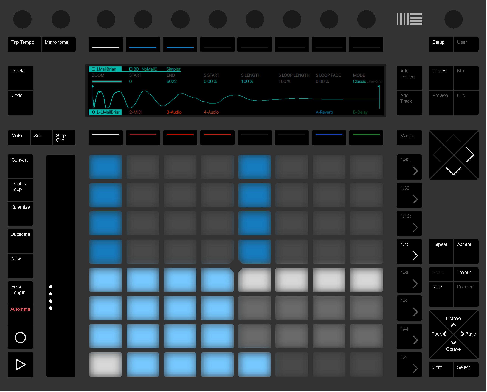
Much of Push 2’s behavior depends on which mode it is in, as well as on which type of track is selected. To help you learn how to work with Push 2, this chapter will walk you through some of the fundamental workflows, and then will provide a reference of all of Push 2’s controls.
There are also a number of videos that will help you get started with Push 2. These are available at https://www.ableton.com/learn-push/
35.1 Setup
After plugging in the included power supply and connecting the USB cable to your computer, turn Push 2 on via the power button in the back. From here, setting up the Push 2 hardware is mostly automatic. As long as Live is running, Push 2 will be automatically detected as soon as it is connected to a USB port on your computer. After connection, Push 2 can be used almost immediately. It is not necessary to install drivers and Push 2 does not need to be manually configured in Live’s Settings.
From time to time, Ableton will release firmware updates for Push 2 that will be included in updates to Live. When using Push 2 for the first time after installing a new version of Live, you may be prompted to update the firmware. Push 2 will walk you through this process.
35.2 Browsing and Loading Sounds
You can browse and load sounds directly from Push 2, without needing to use Live’s browser. This is done in Push 2’s Browse Mode.
Press Push 2’s Browse button:
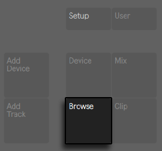
The display is divided into columns. When you first enter Browse Mode, the far left column shows either the specific category of device being browsed or the Collections label, which lets you access tagged browser items quickly. Each column to the right shows the next subfolder (if any exist) or the contents of the current folder. You can scroll through presets and folders using the eight encoders above the display, or navigate through them one at a time via the arrow buttons.
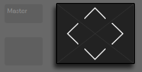
The display will expand automatically as you navigate. You can load Live’s “default” devices from the top level of the browser’s hierarchy, and can quickly move up or down in the hierarchy via the rightmost two upper display buttons.
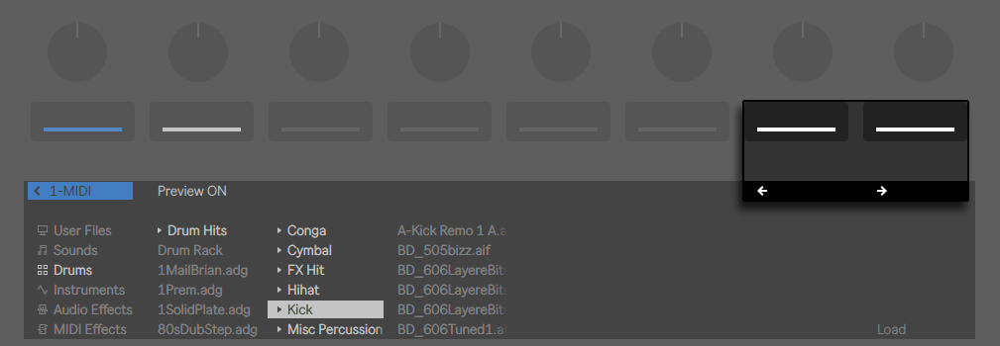
By default, samples and presets from official Packs or Live’s Core Library will preview when selected in the browser. You can toggle preview on or off via the Preview button.
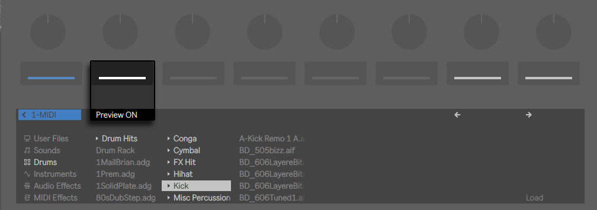
To adjust the previewing volume, hold the Shift button while turning the Master volume encoder.
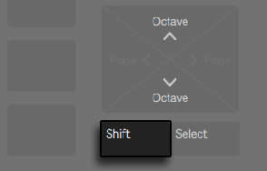
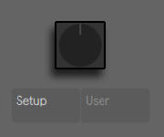
To load the selected item, press the Load button.
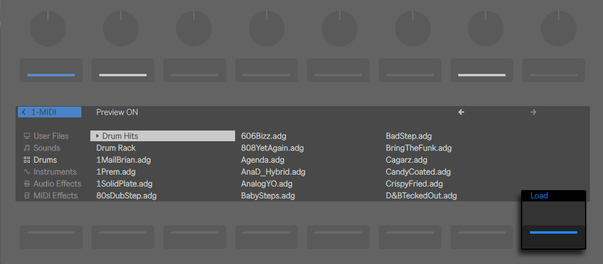
What you see when in Browse Mode depends on the device that was last selected. If you were working with an instrument, Browse Mode will show you replacement instruments. If you were working with an effect, you will see effects. When starting with an empty MIDI track, the display shows all of your available sounds, instruments, drum kits, effects, and Max for Live devices, as well as VST and Audio Unit plug-ins.
35.3 Playing and Programming Beats
To create beats using Push 2, first make sure Note Mode is enabled
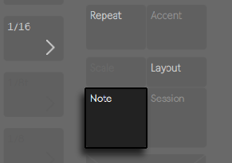
Then use Browse Mode to navigate to the Drums section of the browser and load one of the Drum Rack presets from Live’s library.
When working with a MIDI track containing a Drum Rack, Push 2’s 8x8 pad grid can be configured in a few different ways, depending on the state of the Layout button. Pressing this button cycles between three different modes.
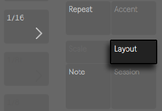
35.3.1 Loop Selector
When the Loop Selector layout is enabled, the pads are divided into three sections, allowing you to simultaneously play, step sequence and adjust the length of your clip.
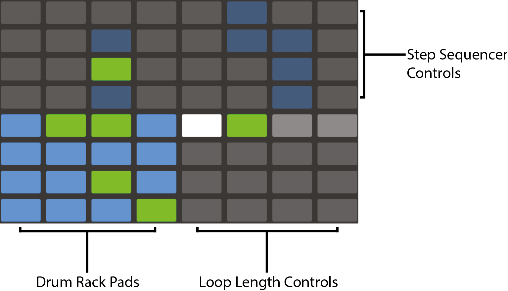
The 16 Drum Rack pads are laid out, like Live’s Drum Rack, in the classic 4x4 arrangement, allowing for real-time playing. Controls in the display and the pads in the Drum Rack match the color of the track, with subtle variations that help you understand what’s happening. The Drum Rack pad colors indicate the following:
- The track’s color — this pad contains a sound.
- Lighter version of the track’s color — this pad is empty.
- Green — this pad is currently-playing.
- White — this pad is selected.
- Dark blue — this pad is soloed.
- Gray— this pad is muted.
When working with Drum Racks that contain a larger number of pads, use Push 2’s touch strip or the Octave Up and Octave Down buttons to move up/down by 16 pads. Hold Shift while using the touch strip or Octave buttons to move by single rows.
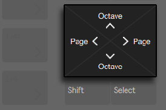
Holding the Layout button gives you momentary access to the 16 Velocities layout. You can also lock the alternate layout in place by holding Shift and pressing the Layout button. To unlock the 16 Velocities layout, press the Layout button again.
35.3.2 16 Velocities Mode
Press the Layout button to switch to the 16 Velocities layout. In this mode, the bottom right 16 pads represent 16 different velocities for the selected Drum Rack pad. Tap one of the velocity pads to enter steps at that velocity.
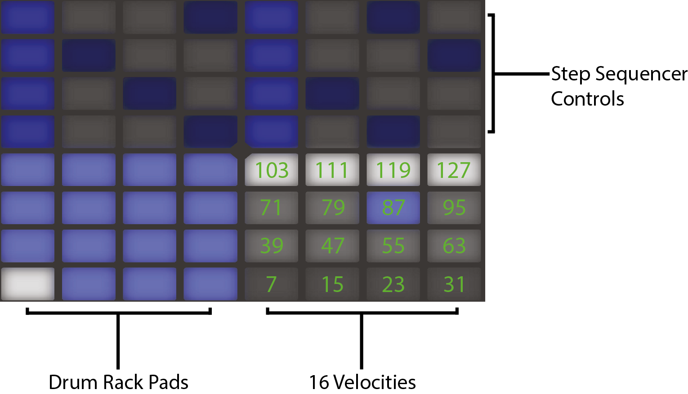
Holding the Layout button gives you momentary access to the loop length controls. You can also lock the loop length controls in place by holding Shift and pressing the Layout button. To unlock the loop length pads, press the Layout button again.
35.3.3 64-Pad Mode
You can also use the entire 8x8 pad grid for real-time drum playing. This is useful when working with very large drum kits, such as those created by slicing. To switch to 64-pad mode, press the Layout button again.
When moving between 64-pad mode and the Loop Selector or 16 Velocities layouts, the 16 pads available for step sequencing will not change automatically. You may still need to use the touch strip or Octave keys in order to see the specific 16 pads you want.
Holding the Layout button gives you momentary access to the loop length controls. You can also lock the loop length controls in place by holding Shift and pressing the Layout button. To unlock the loop length pads, press the Layout button again.
35.3.4 Loading Individual Drums
Browse Mode can also be used to load or replace individual pads within a loaded Drum Rack. To switch between browsing Drum Racks and single pads, make sure you’re in Device Mode by pressing the Device button. This will show the devices on the track.
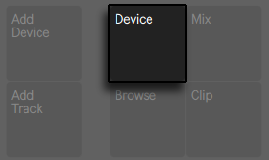
By default, the Drum Rack is selected. To select an individual pad instead, tap that pad, then press the second upper display button. The square icon next to the name represents a pad.
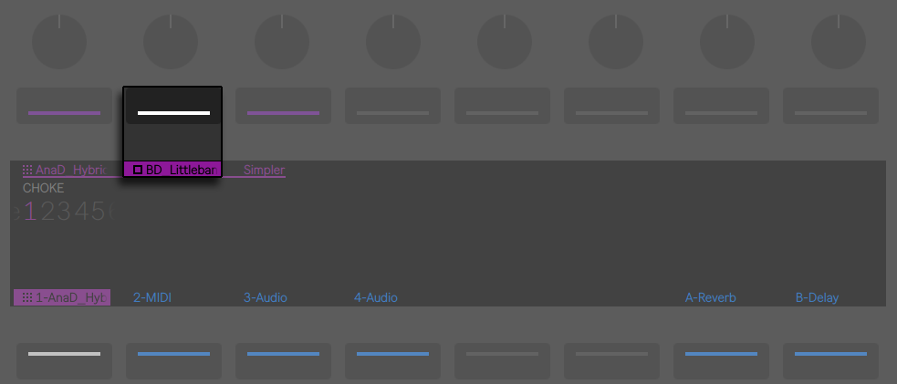
Now, entering Browse Mode again will allow you to load or replace the sound of only the selected pad. The selected pad will flash. Once in Browse Mode, tapping other pads will select them for browsing, allowing you to quickly load or replace multiple sounds within the loaded Drum Rack.
After loading the selected item, the Load button’s name will change to Load Next. Pressing this button again will load the next entry in the list, allowing you to quickly try out presets or samples in the context of your song. You can also load the previous entry in the list via the Load Previous button.
Particularly in a performance situation, you may want to select a pad without triggering it. To do this, press and hold the Select button while tapping a drum pad or one of the 16 Velocity pads.
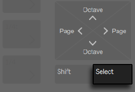
You can also select without triggering by pressing the lower display button for the Drum Rack’s track. This will expand the Drum Rack and allow the individual pads to be selected via the other lower display buttons. You can navigate to the previous or next pad via the left and right arrow keys.
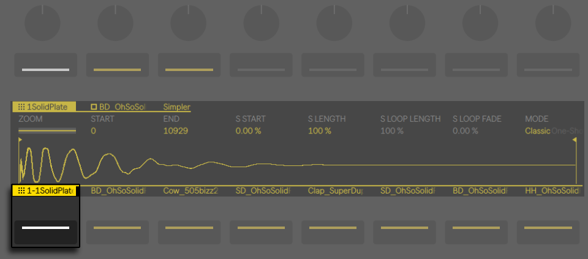
35.3.4.1 Additional Pad Options for Push 2
To copy a pad to a different location in your Drum Rack, hold the Duplicate button and press the pad you’d like to copy.
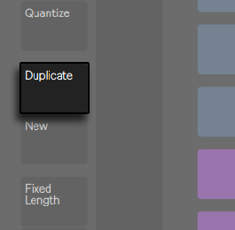
While continuing to hold Duplicate, press the pad where you’d like to paste the copied pad. Note that this will replace the destination pad’s devices (and thus its sound) but will not replace any existing notes already recorded for that pad.
When a single pad is selected, you can adjust its choke group assignment via the first encoder or transpose the pad via the second encoder.
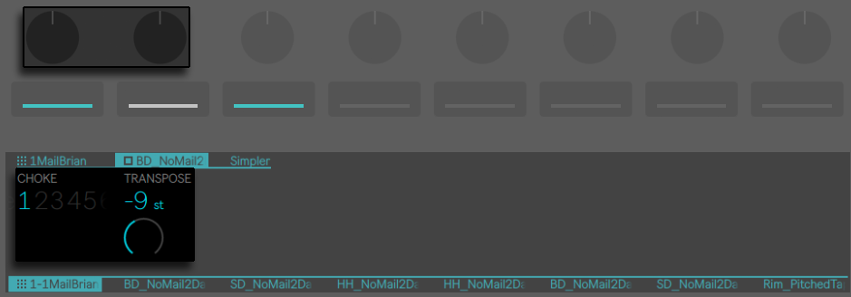
When working with drums, Push 2’s pads can be colored individually. To change a pad’s color, hold Shift and tap the pad. Then tap one of the pads on the outer ring to choose that color for the selected pad.
Your custom pad colors will be saved and reloaded with your Live Set, but will not be visible within Live. They only appear on Push 2.
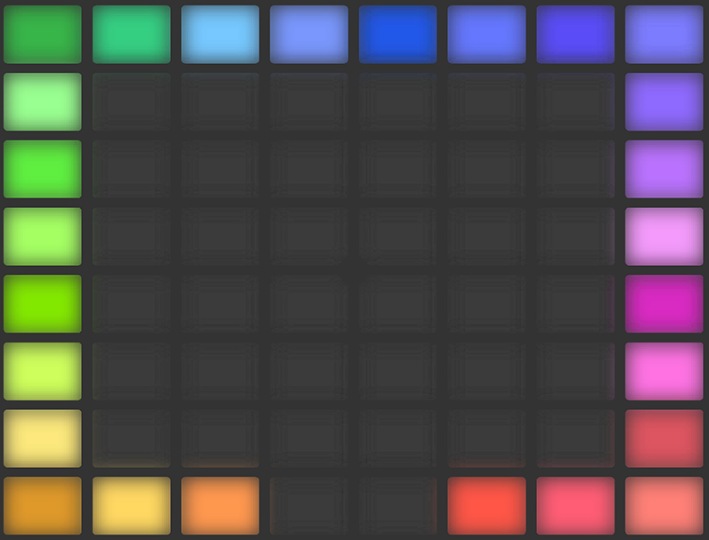
35.3.5 Step Sequencing Beats
Tapping a pad selects it and also enables it for step sequencing.
To record notes with the step sequencer, tap the pads in the step sequencer controls to place notes in the clip where you want them. The clip will begin playing as soon as you tap a step. By default, each step sequencer pad corresponds to a 16th note, but you can change the step size via the Scene/Grid buttons.
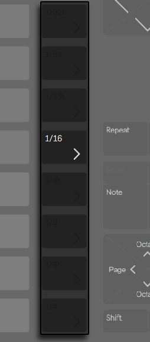
Adjust the tempo using the Tempo encoder. Each click of the encoder will adjust the tempo in increments of one BPM. Holding Shift while adjusting will set the tempo in increments of .1 BPM.
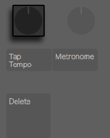
As the clip plays, the currently playing step is indicated by the moving green pad in the step sequencer section. When Record is enabled, the moving pad will be red. Tapping a step that already has a note will delete that note. Press and hold the Mute button while tapping a step to deactivate it without deleting it. Press and hold the Solo button while tapping a pad to solo that sound.
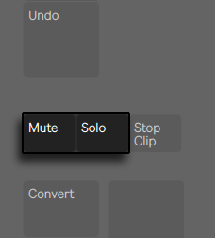
You can also adjust the velocity and micro-timing of individual notes, as described in the section on step sequencing automation.
To delete the entire pattern, press the Delete button. To delete all notes for a single pad, press and hold Delete while tapping that pad. Holding Delete while pressing a pad that has no notes recorded in the current pattern deletes all of the devices from that pad.
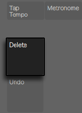
The pad colors in the step sequencer section indicate the following:
- Gray — this step doesn’t contain a note.
- The clip’s color — this step contains a note. Higher velocities are indicated by brighter pads.
- Lighter version of the clip’s color — this step contains a note, but the note is muted.
- Unlit — the right two columns of pads will be unlit if triplets are selected as the step size. In this case, these pads are not active; only the first six pads in each row of steps can be used.
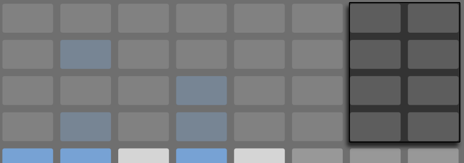
For detailed information about adjusting the loop length pads, see the section called Adjusting the Loop Length.
35.3.6 Real-time Recording
Drum patterns can also be recorded in real-time by playing the Drum Rack pads. Follow these steps to record in real-time:
- If you want to record with a click track, press the Metronome button to enable Live’s built-in click. You can adjust the metronome volume by holding the Shift button while adjusting the Master volume encoder. As with all of the buttons on Push 2 that turn something on or off, when the metronome is on, its button light will pulse.
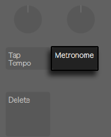
- Then Press the Record button to begin recording.
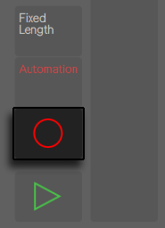
If you’ve enabled a recording count-in in Live, you’ll see a countdown bar move across the top of Push 2’s display and flash in tempo. This can serve as a helpful visual reference for when to begin playing.
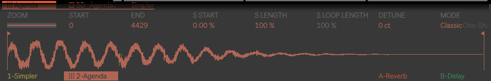
Now any Drum Rack pads you play will be recorded to the clip. Pressing Record again will stop recording but will continue playing back the clip. Pressing Record a third time will enable overdub mode, allowing you to record into the clip while it plays back. Subsequent presses continue to toggle between playback and overdub. During playback, a small progress bar will appear in the display to show the playback position of each playing clip.
The pads are velocity sensitive, but if you want to temporarily override the velocity sensitivity, press the Accent button. When Accent is enabled, all played or step-sequenced notes will be at full velocity (127), regardless of how hard you actually tap the pads.
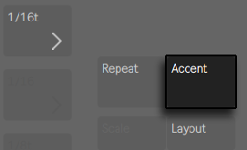
If you press and release Accent quickly, the button will stay on. If you press and hold, the button will turn off when released, allowing for momentary control of accented notes.
In 16 Velocities mode, you can tap one of the 16 velocity pads to record the selected sound at that velocity. Note that Accent overrides this behavior.
Pressing New stops playback of the currently selected clip and prepares Live to record a new clip on the currently selected track. This allows you to practice before recording a new idea. By default, pressing New also duplicates all clips that are playing on other tracks to a new scene and continues playing them back seamlessly. This behavior can be changed by changing the Workflow mode in Push 2’s Setup menu.
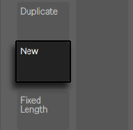
35.3.7 Fixed Length Recording
Press the Fixed Length button to set the size of new clips to a predetermined length.
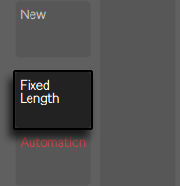
Press and hold Fixed Length to set the recording length.
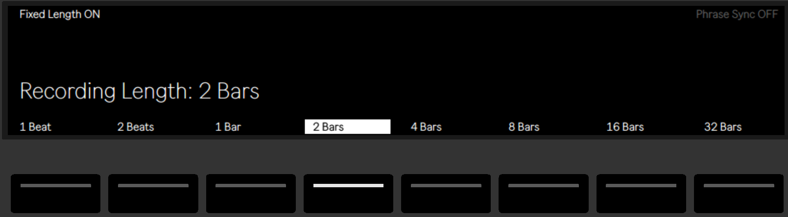
When Fixed Length is disabled, new clips will continue to record until you press the Record, New or Play/Stop buttons.
By default, starting a recording with Fixed Length enabled will create an empty clip of the selected length, and then begin recording from the beginning of the clip, in accordance with Live’s global launch quantization. If Phrase Sync is enabled, Push 2 treats the chosen length as a musical phrase, and will begin recording from the position in the clip that corresponds to that position within a phrase of that length. For example, with a fixed length of 4 bars and Phrase Sync on, starting a recording when Live’s global transport is at bar 7 will create an empty four bar clip and begin recording at the third bar of that clip.
Enabling Fixed Length while recording will switch recording off and loop the last few bars of the clip, depending on the Fixed Length setting.
35.4 Additional Recording Options
35.4.1 Recording with Repeat
With Push 2’s Repeat button enabled, you can hold down a pad to play or record a stream of continuous, rhythmically-even notes. This is useful for recording steady hi-hat patterns, for example. Varying your finger pressure on the pad will change the volume of the repeated notes.
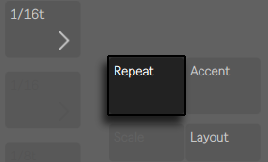
The repeat rate is set with the Scene/Grid buttons. Note that Push 2 “remembers” the Repeat button’s state and setting for each track. If you press and release Repeat quickly, the button will stay on. If you press and hold, the button will turn off when released, allowing for momentary control of repeated notes.
Turn up the Swing knob to apply swing to the repeated notes. When you touch the knob, the display will show the amount of swing.
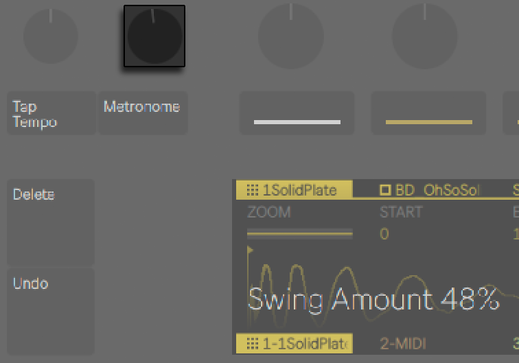
35.4.2 Quantizing
Pressing Push 2’s Quantize button will snap notes to the grid in the selected clip.
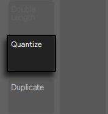
Press and hold Quantize to change the quantization options:
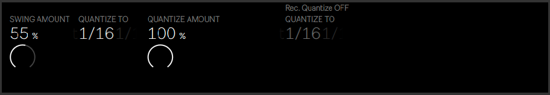
Swing Amount determines the amount of swing that will be applied to the quantized notes. Note that the Swing amount can be adjusted from Encoder 1 or from the dedicated Swing knob.
Quantize To sets the nearest note value to which notes will be quantized, while Quantize Amount determines the amount that notes can be moved from their original positions.
Enable Record Quantize by pressing the corresponding upper display button to automatically quantize notes during recording. Adjust the record quantization value with Encoder 5. Note that if Record Quantize is enabled and Swing is turned up, the automatically quantized notes will not have swing applied.
When working with drums, press and hold Quantize and press a Drum Rack pad to quantize only that drum’s notes in the current clip.
35.4.3 Arrangement Recording
When Live’s Arrangement View is in focus in the software, pressing Record will toggle Arrangement Recording on and off. While Arrangement Recording is on, all of your actions on Push 2 are recorded into the Arrangement View.
You can also trigger Arrangement Recording while Live’s Session View is in focus by holding Shift and pressing Record. Note that this behavior is reversed when the Arrangement is in focus; holding Shift and pressing Record will then toggle Session recording.
35.5 Playing Melodies and Harmonies
After working on a beat, you’ll want to create other elements such as a bassline, harmony parts, etc. If you already have additional tracks in your Set, you can switch between them using the lower display buttons or the left and right arrow keys.
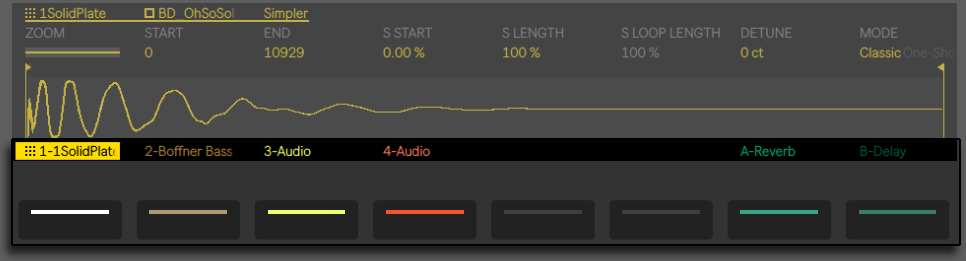
Or you can add a new track by pressing the Add Track button.
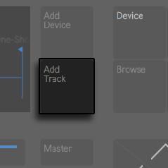
Adding a track puts Push 2 into Browse mode, allowing you to select which type of track you’d like to add (MIDI, Audio, or Return) and optionally load a device to the new track at the same time.
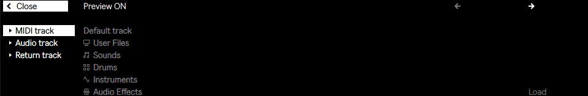
Note that when pressing the Add Track button while a track within a Group Track is selected, any new tracks will be inserted into that Group Track.
After creating a track, you can change its color. To do this, hold Shift and press the lower display button for the track. Then tap one of the pads on the outer ring to choose that color for the selected track.
When working with a MIDI track containing an instrument, Push 2’s 8x8 pad grid automatically configures itself to play notes. By default, every note on the grid is in the key of C major. The bottom left pad plays C1 (although you can change the octave with the Octave Up and Down buttons). Moving upward, each pad is a fourth higher. Moving to the right, each pad is the next note in the C major scale.
Play a major scale by playing the first three pads in the first row, then the first three pads in the next row upwards. Continue until you reach the next C:
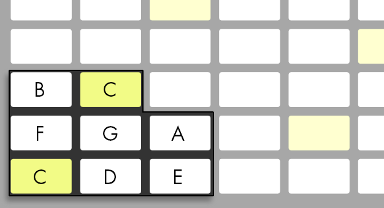
The pad colors help you to stay oriented as you play:
- The track’s color — this note is the root note of the key (e.g., C).
- White — this note is in the scale, but is not the root.
- Green — the currently-playing note (other pads will also turn green if they play the same note).
- Red — the currently-playing note when recording.
To play triads, try out the following shape anywhere on the grid:
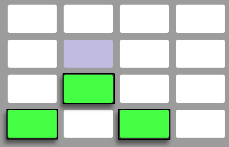
Holding the Layout button gives you momentary access to the loop length controls. You can also lock the loop length controls in place by holding Shift and pressing the Layout button. To unlock the loop length pads, press the Layout button again.
35.5.1 Playing in Other Keys
Press Push 2’s Scale button to change the selected key and/or scale.
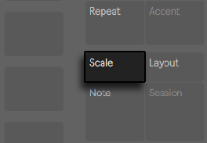
Using the upper and lower display buttons, you can change the key played by the pad grid. The currently selected key appears in white, while the other key options appear in gray:
By default, the pads and scale selection options indicate major scales. You can change to a variety of other scale types using encoders 2 through 7. The selected scale type is highlighted.
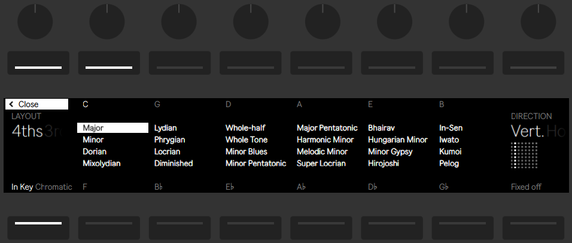
In addition to changing the key, you can also change the arrangement of the grid in a number of ways:
The Layout (Encoder 1) and Direction (Encoder 8) controls work together to determine the orientation of the pad grid. The default settings are a Layout of “4ths” and a Direction of “Vert.” In this configuration, each pad is a 4th higher than the pad directly below it. Changing the Layout to “3rds“ means that each pad is now a 3rd higher than the pad directly below it. The “Sequent” layout puts all notes sequentially in order. This layout is useful if you need a very large range of notes available, because it has no duplicated notes.
Changing the Direction control to “Horiz.” rotates the pad grid 90 degrees. For example, with a Layout of “4ths,” each pad is a 4th higher than the pad to its left.
Fixed Off/On: The lower right display button toggles Fixed on or off. When Fixed is on, the notes on the pad grid remain in the same positions when you change keys; the bottom-left pad will always play C, except in keys that don’t contain a C, in which case the bottom-left pad will play the nearest note in the key. When Fixed is off, the notes on the pad grid shift so that the bottom-left pad always plays the root of the selected key.
In Key/Chromatic: The lower left display button toggles between In Key and Chromatic. With In Key selected, the pad grid is effectively “folded” so that only notes within the key are available. In Chromatic Mode, the pad grid contains all notes. Notes that are in the key are lit, while notes that are not in the key are unlit.
Scale options are saved with the Set, and Push 2 will return to these settings when the Set is loaded again. If you have particular key and scale settings that you like to use all the time, you can save them in your Default Set. Any new Set created after this will have those settings in place when working with Push 2.
All of the real-time recording options available for drums are also available for melodies and harmonies, including the Accent button, fixed length recording, recording with repeat, and quantizing. But for detailed editing, you’ll work with the Melodic Sequencer described in the next section.
One editing possibility is available in the real-time Note Mode: to quickly delete all notes of the same pitch within the current loop, press and hold Delete and then tap the respective pad.
35.6 Step Sequencing Melodies and Harmonies
In addition to playing and recording in real time, you can also step sequence your melodies and harmonies. To toggle to the Melodic Sequencer, press the Layout button. This will set the 8x8 pad grid as follows:
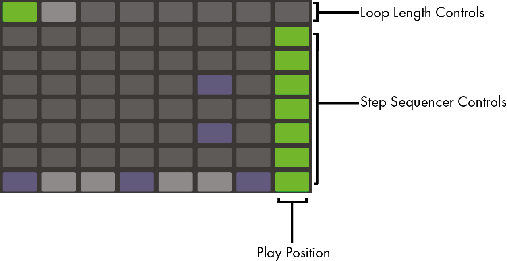
When using the Melodic Sequencer, all eight rows of pads allow you to place notes in the clip. You can adjust the loop length and access additional step sequencing pages via the loop length pads. The loop length pads can be momentarily accessed in the top row while holding the Layout button.
You can also lock the loop length pads in place. To do this, hold Shift and tap the Layout button. Note that Push remembers this locked/unlocked state for each track. To unlock the loop length pads, press the Layout button again.
With In Key selected, each row corresponds to one of the available pitches in the currently selected scale. With Chromatic selected, notes that are in the key are lit, while notes that are not in the key are unlit. The white row (which is the bottom row by default) indicates the root of the selected key. Each column of pads represents a step in the resolution set by the Scene/Grid buttons.
As with the real-time playing layout, pressing the Octave Up or Down button shifts the range of available notes. You can also use the touch strip to change the range. Hold the Shift key while adjusting the touch strip to shift the range by octaves. Hold the shift key while pressing the Octave buttons to shift by one note in the scale. The display will briefly show the available range as you adjust it.
Additionally, brightly-lit touch strip lights indicate the currently available note range, while dimly-lit touch strip lights indicate that the clip contains notes within the corresponding note range.
Pressing Layout again will toggle to the Melodic Sequencer + 32 Notes layout.
In addition to adding and removing notes, you can also adjust the velocity and micro-timing of the notes, as described in the section on step sequencing automation.
35.6.1 Adjusting the Loop Length
The loop length controls allow you to set the length of the clip’s loop and determine which part of it you can see and edit in the melodic and drum step sequencers. Each loop length pad corresponds to a page of steps, and the length of a page depends on the step resolution. When working with drums at the default 16th note resolution, two pages of steps are available at a time, for a total of two bars. In the Melodic Sequencer layout, one page of eight steps is available at a time, for a total of two beats. To change the loop length, hold one pad and then tap another pad, or, to set the loop length to exactly one page, quickly double-tap the corresponding pad.
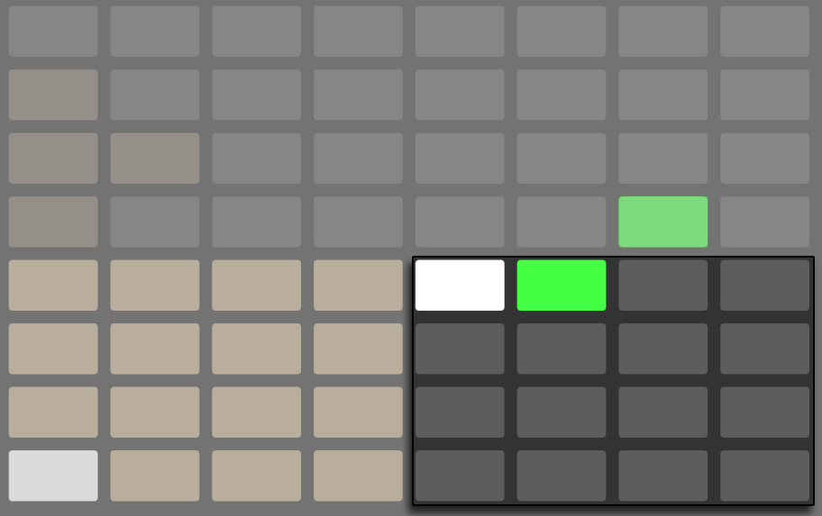
Note that the page you see is not necessarily the page you hear. When you set the loop length, the pages will update so that the current play position (as indicated by the moving green pad in the step sequencer section) always remains visible. But in some cases, you may want to disable this auto-follow behavior. For example, you may want to edit a single page of a longer loop, while still allowing the loop to play for the length you set. To do this, single-tap the pad that corresponds to that page. This will “lock” the view to that page without changing the loop length. You can also navigate to the previous or next page by pressing the Page Left/Right buttons.
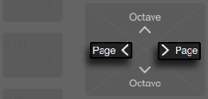
To then turn auto-follow back on, simply reselect the current loop. Note that single-tapping a page that is outside of the current loop will immediately set the loop to that page. You can also turn auto-follow back on by holding either one of the Page Left/Right buttons.
The pad colors in the loop length section indicate the following:
- Unlit — this page is outside of the loop.
- Gray — this page is within the loop, but is not currently visible in the step sequencer section.
- White — this page is visible in the step sequencer section, but is not currently playing.
- Green — this is the currently playing page.
- Red — this is the currently recording page.
If you need to access the loop length pads frequently, you can lock them in place. To do this, hold Shift and tap the Layout button. Note that Push remembers this locked/unlocked state for each track. To unlock the loop length pads, press the Layout button again. You can also navigate to the previous or next page by pressing the Page Left/Right buttons.
To duplicate the contents of a sequencer page, hold Duplicate, press the loop length pad for the page you want to duplicate, and then press the loop length pad for the destination page. Note that this will not remove existing notes in the destination page, but will add copied notes on top. To remove notes first, hold Delete and tap the loop length pad for that page.
35.7 Melodic Sequencer + 32 Notes
The Melodic Sequencer + 32 Notes layout combines both step sequencing and real-time playing capabilities. Providing access to multiple octaves and steps on a single page, this layout is ideal for figuring out chords and harmonies to sequence. It is also well suited to longer phrases.
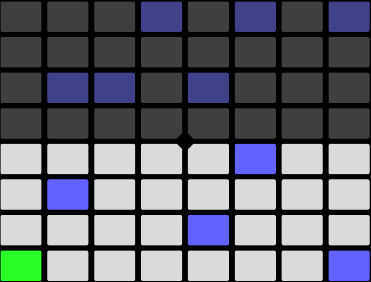
35.7.1 32 Notes
The bottom half of the pad grid lets you play notes in real-time, and select them for step sequencing. Each pad corresponds to one of the available pitches in the currently selected scale. Pressing a pad will select and play the note. Selected notes are represented by a lighter version of the track’s color.
To select a pad without triggering it, press and hold the Select button while tapping a pad.
The pad colors indicate the following:
- The track’s color — this note is the root note of the scale.
- Lighter version of the track’s color — this pad is selected.
- Green — this pad is currently playing.
- White — this note is in the scale, but is not the root.
Pressing the Octave Up or Down button shifts the range of available notes. Holding the Shift key while adjusting the touch strip shifts the range by octaves. You can hold the Shift key while pressing the Octave buttons to shift by one note in the scale. The display will briefly show the available range as you adjust it.
As with the 64 Notes layout, the notes in the bottom half of the pad grid can be adjusted via the Scale menu.
35.7.2 Sequencer
Tapping a step in the top half of the pad grid adds all selected notes to that step. Steps containing notes are lit in the color of the clip.
Holding a step lets you view notes contained within the step, which are indicated in the bottom half of the pad grid by the lighter version of the track’s color. Tapping any of these selected notes will remove it from the step.
Holding multiple steps will add selected notes to all those steps. While holding Duplicate, you can press a step to copy the notes in that step and then press another step to paste them to a new location in the step sequencer.
The pad colors in the step sequencer indicate the following:
- The clip’s color — this step contains a note.
- Green — this step is currently playing.
- White — this step is selected.
- Light gray — this step contains a note, but the note is muted.
- Gray — this pad is empty.
- Unlit — the right two columns of pads will be unlit if triplets are selected as the step size. In this case, these pads are not active; only the first six pads in each row of steps can be used.
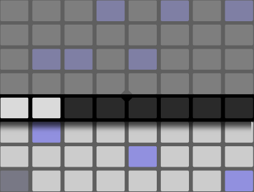
You can adjust the loop length and access additional step sequencing pages via the loop length pads. The loop length pads can be momentarily accessed in the fifth row while holding the Layout button.
You can also lock the loop length pads in place. To do this, hold Shift and tap the Layout button. Note that Push remembers this locked/unlocked state for each track. To unlock the loop length pads, press the Layout button again. You can also navigate to the previous or next page by pressing the Page Left/Right buttons.
To duplicate the contents of a sequencer page, hold Duplicate, press the loop length pad for the page you want to duplicate, and then press the loop length pad for the destination page. Note that this will not remove existing notes in the destination page, but will add copied notes on top. To remove notes first, hold Delete and tap the loop length pad for that page.
35.8 Working with Samples
Push 2 allows you to play samples from the pads in a variety of ways, with detailed but easy-to-use control over sample parameters directly from the encoders and display. The instrument that powers Push 2’s sample playback functionality is Simpler, and we recommend reading the detailed Simpler chapter to learn more about its functionality.
To start working with a sample, you can either add a new MIDI track or press Browse to enter Browse Mode on an existing MIDI track. Although you can load an empty Simpler to a track, it isn’t playable until it contains a sample. Push 2’s display will inform you that your Simpler is empty and suggest browsing for a sample:
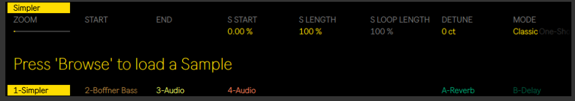
After loading a sample and switching to Device View, you will see the sample’s waveform in Push 2’s display, along with a number of parameters that allow you to quickly adjust how the sample plays back. This is the main bank of Simpler’s controls.
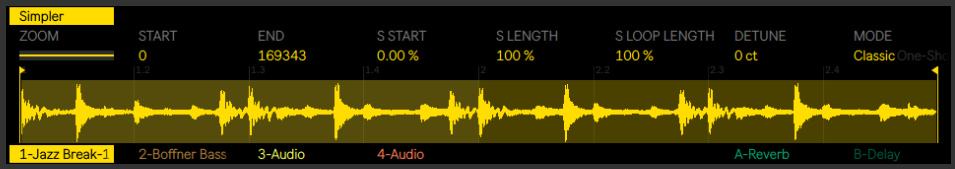
By default, Simpler will automatically set certain parameters based on the length of the loaded sample. For example, short samples will play once when triggered, while long samples will be set to loop and warp. Warped samples will play back at the tempo of your Set, regardless of which note you play. Bringing a warped clip into Simpler from an audio track, the browser, or your desktop preserves any warp settings and markers that were in the original clip. For more information about warping, see the Audio Clips, Tempo, and Warping chapter.
The most important parameter that determines how Simpler will treat samples is the Mode control, which is used to choose one of Simpler’s three playback modes.
- Classic Playback Mode is the default mode when using Simpler, and is optimized for creating “conventional” melodic and harmonic instruments using pitched samples. It features a complete ADSR envelope and supports looping, allowing for samples to sustain as long as a note is held down. Classic Mode is polyphonic by default, and the pad grid uses the same layout in this mode as is used when playing other pitched instruments.
- One-Shot Playback Mode is exclusively for monophonic playback, and is optimized for use with one-shot drum hits or short sampled phrases. This mode has simplified envelope controls and does not support looping. By default, the entire sample will play back when a note is triggered, regardless of how long the note is held. The pad grid in One-Shot Mode also uses the melodic layout.
- Slicing Playback Mode non-destructively slices the sample so that the individual slices can be played back from the pads. You can create and move slices manually, or choose from a number of different options for how Simpler will automatically create slices. This mode is ideal for working with rhythmic drum breaks.
35.8.1 Classic Playback Mode
In Classic Mode, the various sample position controls change which portion of the sample you play back. For example, if you load a drum break that contains silence at the beginning, you can start playback from after the silence. The Start control sets the absolute position in the sample from which playback could start, while the End control sets where playback could end; these parameters define the region of the sample that can be worked with. S Start and S Length are represented in percentages of the total sample length enabled by Start and End. For example, hitting a pad after setting an S Start value of 50% and S Length value of 25% will play back the third quarter (50-75%) of the region between the Start and End values. S Loop Length determines how much of the available sample (also determined by the Start and End values) will loop. Note that this parameter is only active if Loop is enabled.
Adjust the Zoom encoder to zoom into a portion of the waveform. The display shows a representation of the whole sample, as well as the currently active region. Turning the Zoom encoder clockwise zooms in. The specific portion of the sample that you zoom to is determined by the last-touched sample position control, e.g., Start, End, S Start, S Length.
Pressing Simpler’s upper display button will enter Edit Mode. When in Edit Mode, the lower display buttons select additional pages of parameters and the upper display buttons toggle certain settings on or off. Pressing Simpler’s upper display button again will exit Edit Mode.
Pressing the Loop On/Off button determines whether or not the sample will loop when a pad is held down. The Warp as… button adjusts the warping of the sample between the Start and End values so that it will play back precisely within the specified number of bars. Live makes its best guess about what this value should be based on the length of the sample, but if it gets it wrong, you can use the ÷2 or ×2 buttons to double or halve the playback speed, respectively.
Crop removes the portions of the sample that are outside of the Start and End points, while Reverse plays the entire sample backwards. Note that both Crop and Reverse are non-destructive; they create a copy of the sample and apply the process to the copy, so your original sample is not changed.
35.8.2 One-Shot Mode
In One-Shot Mode, the Zoom, Start, and End controls function the same as in Classic Mode, as do the Warp as…, ÷2, ×2, Crop, and Reverse buttons.
With Trigger enabled, the sample will continue playing even after the pad is released; the amount of time you hold the pad has no effect when Trigger is on. You can shape the volume of the sample using the Fade In and Fade Out encoders. Fade In determines how long it takes the sample to reach its maximum volume after a pad is hit, while Fade Out begins a fade out the specified amount of time before the end of the sample region. To stop a one-shot sample immediately, hold Shift while pressing the Play/Stop button.
With Gate enabled, the sample will begin fading out as soon as you release the pad. The Fade Out time determines how long it will take to fade to silence after release.
The Transpose encoder allows you to transpose the sample up or down by up to 48 semitones (four octaves). Note that when transposing, the timbre of the sample may change dramatically depending on which Warp Mode you’ve selected. The Gain encoder sets the overall volume of the Simpler instrument.
35.8.2.1 Legato Playback
Classic and One-Shot Modes provide a unique way of repitching a sample on the fly, without changing its playback position. This is essentially a playable version of Legato Mode in clips. To enable this functionality:
- In Edit Mode, press the second lower display button to view the Global parameter bank.
- Set the Glide Mode parameter to Glide.
- Set the Voices parameter to 1. Note that this parameter is only available in Classic Mode. In One-Shot Mode, playback is always monophonic.
Now, as you play the pads legato, the sample will transpose without changing playback position. For best results, make sure Warp is on (in the Warp parameter bank). The Complex Pro Warp Mode tends to sound best when transposing, but experiment with the various Warp Modes to see which one works best for your particular sample.
35.8.3 Slicing Mode
In Slicing Mode, the Zoom, Start, and End controls function the same as in Classic and One-Shot Modes, as do the Warp as…, ÷2, ×2, and Reverse buttons.
The Slice By chooser determines the specific way in which slices will be created:
- Transient - Slices are placed on the sample’s transients automatically. The Sensitivity encoder determines how sensitive Simpler is to transient levels within the sample, and thus how many slices will be automatically created. Higher numbers result in more slices, up to a maximum of 64 slices.
- Beat - Slices are placed at musical beat divisions. The Division encoder selects the beat division at which Simpler will slice the sample region.
- Region - Slices are placed at equal time divisions. The Regions encoder selects the number of evenly-spaced slices that will be created.
- Manual - When Manual is selected, no slices are placed automatically. Instead, slices are created manually by enabling Pad Slicing and tapping empty pads as the sample plays back. To create manual slices:
- Tap a pad that contains a slice to begin playback from that slice.
- When the sample reaches the point at which you would like to create an additional slice (a drum hit, for example), tap any empty pad.
- A slice will be placed at this point and it will be assigned to a pad. Any pads that were already assigned after this point will be shifted “upward” on the pad grid.
- Once the loop is sliced as you like it, turn Pad Slicing off.
In all slicing modes, slices are laid out from left to right in groups of four starting from the bottom left pad. Each additional four slices are placed on the next four pads up. After the left half of the pad grid is used, slices are placed along the bottom row on the right side of the pad grid, again moving upwards in groups of four.
By default, the pad grid uses the 64-pad drum layout when in Slicing Mode. Pressing the Layout button cycles between 64-pad, Loop Selector, and 16 Velocities modes.
The Playback encoder determines how many slices can be triggered simultaneously. Mono is monophonic; only one pad can be played or sequenced at a time. When set to Poly, multiple pads can be triggered together. When set to Through, playback is monophonic, but triggering one slice will continue playback through the rest of the sample region.
The Trigger/Gate switch is the same concept as in One-Shot Playback Mode, but what you actually hear depends on which Playback mode is selected.
Nudge allows you to adjust the position of each slice marker. This is especially useful for fine-tuning slices that you’ve created in Manual mode. For greater nudging accuracy, tap the pad you’d like to adjust and use the Zoom encoder to get a closer look. Hold Shift while adjusting Nudge for extremely small adjustments.
Split Slice creates a new slice in the middle of the currently selected slice. This is also useful in Manual mode, in conjunction with Nudge, for fine-tuning slices created via Pad Slicing.
To delete a slice (either manually or automatically created), hold Delete and tap the corresponding pad.
35.9 Navigating in Note Mode
Now that you’ve created a few tracks, you can continue to add more. But you may want to move between already-existing tracks to continue working on musical ideas using those instruments and devices. You can move directly to a new track using the lower display buttons or move sequentially to the previous or next track using the left and right arrow buttons.
Note that selecting a MIDI track on Push 2 automatically arms it, so it can be played immediately. In Live, track Arm buttons will appear pink to indicate that they have been armed via selection.
You can also manually arm any track by holding the lower display button for that track, or by holding the Record button and pressing the track’s lower display button.
This is useful if, for example, you want to use Push 2 to record audio clips. In Live, a manually armed track’s track Arm button will appear red. On Push 2’s display, manually armed tracks appear with a special icon.
The specific behavior of the Up/Down Arrows is determined by the Workflow mode, which is set in Push 2’s Setup menu. In both modes, the Up/Down Arrows move up or down by a single scene. In Scene Workflow, the selected scene is triggered. In Clip Workflow, only the selected track’s clip is triggered. Clips in other tracks are not affected.
Navigating with the Up/Down Arrows in Note Mode always begins playback immediately, and a triggered clip will take over the play position from whatever clip was played in that track before. Note that this is the same behavior as if the clips were set to Legato Mode in Live.
35.10 Working With Instruments and Effects
Pressing the Device button puts Push 2 in Device Mode, which allows you to use the encoders to control parameters in Live’s devices and third-party plug-ins.
In Device Mode, the upper display buttons select devices in the currently selected track, enabling their parameters for editing. The currently selected device is highlighted in the display.
Once a device is selected, pressing its upper display button again will enter Edit Mode. When in Edit Mode, the lower display buttons select additional pages of parameters for the selected device.
When in Edit Mode, pressing the leftmost upper display button will take you back up to the Device Mode’s top level.
Certain devices, such as Live’s Operator instrument, have more than eight pages of parameters. When working with these devices in Edit Mode, the rightmost lower display button will show an arrow. Press this button to scroll to the additional pages and then press the leftmost lower display button to get back.
35.10.1 Adding, Deleting, and Reordering Devices
To load additional devices such as MIDI or audio effects to a track, press the Add Device button. This will open the Browser and display all device types that can be loaded to the current track.
You can also load an instrument via the Add Device button, but be aware that this works just like Browse Mode: You will replace the instrument that’s already on the track.
As with Browse Mode, use the encoders or arrow keys to navigate between devices in the browser, and the Load button to load the selected device or preset. Devices will load to the right of the previously-selected device, although note that MIDI effects will always be placed before the instrument in the track and audio effects will always be placed after it.
To delete a device, hold the Delete button and press the upper display button that corresponds to the device.
To disable a device (without deleting it), hold the Mute button and press the upper display button that corresponds to the device. Disabled devices (and all of their parameters) appear gray in the display.
To re-enable a disabled device, hold Mute and again press the upper display button that corresponds to the device.
Holding the Mute button for a few moments will lock it on. You can then release Mute and toggle devices on and off just by pressing the corresponding upper display button. Press Mute again to unlock it.
To move a MIDI or audio effect to a different position in the track’s chain of devices, press and hold the upper display button that corresponds to the effect. Then use any of the eight encoders to scroll the device to the new position and release the upper display button.
35.10.2 Working with Racks
Instrument, Drum, and Effect Racks allow for multiple chains of devices to be contained within a single device. On Push 2’s display, Racks have special icons that distinguish them from regular devices.
To open a Rack, select it using the corresponding upper display button. Then press this button again. The Rack will unfold, revealing the devices in the currently selected chain. An unfolded Rack appears in the display with an underline that extends to the end of the enclosed devices. Each press of a selected Rack’s upper display button will toggle it open or closed. Note that Drum Racks cannot be folded or unfolded directly from Push 2. They will appear in Push 2’s display as folded or unfolded depending on how they were set within Live.
When the Rack itself is selected, the eight encoders control the Rack’s Macro Controls. Once a Rack is open, you can select one of its contained devices by pressing the relevant upper display button. After selecting a different device, the encoders will then control its parameters instead.
To access the devices on additional chains within a multi-chain Rack, press and hold the Rack’s upper display button. The Rack’s chains will be shown at the bottom of the display and can be selected via the corresponding lower display buttons.
35.11 Track Control And Mixing
To control volumes, pans, or sends with the encoders, press the Mix button.
Each press of the Mix button toggles between Track Mix Mode and Global Mix Mode. In Track Mix Mode, the first two upper display buttons select between mix parameters for the selected track and input and output routing options for that track. The lower display buttons are used to select the track. With Mix selected, the encoders adjust volume, pan, and send levels for the currently selected track.
Hold Shift while adjusting the encoders for fine-tune control.
If your Set contains more than six return tracks, the two rightmost upper display buttons will change to arrows, which allow you to shift the available parameters left or right.
With Input & Output selected, all of the track’s routing and monitoring options can be adjusted from the encoders.
In Global Mix Mode, the encoders adjust either volumes, pans, or send levels for the eight visible tracks. Select which parameter will be controlled via the upper display buttons.
If your Set contains more than six return tracks, the rightmost upper display button will change to an arrow, which allows you to shift the available sends to the right. Volumes and Pans will always remain visible.
If your Set contains more than eight tracks, the left and right arrow keys allow you to shift the visible tracks left or right.
Press the Master button to select the Main track. Press Master again to return to the previously selected track.
Note that when Split Stereo Pan Mode is active while in Global Mix Mode, the display will show the current pan value, but the pan dial will be disabled. In Track Mix Mode, the display will show either the pan control or stereo pan sliders, depending on the active pan mode.
35.11.1 Rack and Group Track Mixing
On Push 2’s display, Group Tracks and tracks that contain Instrument or Drum Racks have special icons that distinguish them.
These types of tracks can be unfolded, allowing you to use the Mix Modes to control the tracks and chains within them. To unfold one of these tracks, select it using the corresponding lower display button. Then press this button again. The Group Track or Rack will unfold, revealing the enclosed tracks or chains. An unfolded track appears in the display with an underline that extends to the end of the enclosed tracks or chains. Each press of a selected track’s lower display button will toggle it open or closed.
Use the left and right arrow keys to access additional chains or tracks that may have been pushed off the display after unfolding. When working with an unfolded Drum Rack, hold Select and tap a pad to jump to that pad in the mixer. This can make it easier to mix with a large Drum Rack.
35.12 Recording Automation
Changes that you make to device and mixer parameters can be recorded to your clips as automation, so that the sound will change over time as the clip plays. To record automation, press Push 2’s Automation button so that it turns red.
This toggles Live’s Session Automation Arm button, allowing you to record changes you make to Push 2’s encoders as part of the clip. When you’re done recording parameter changes, press the Automation button again to turn it off. To delete the changes you’ve recorded for a particular parameter, press and hold the Delete button and touch the corresponding encoder. If automation hasn’t been recorded for a parameter, holding Delete and touching an encoder will reset the corresponding parameter to its default value.
Automated parameters are shown with a white dot next to the parameter in the display. Parameters that you have overridden (by manually adjusting the parameter while not recording) will show a gray dot.
To re-enable all automation that you have manually overridden press and hold Shift and press the Automation button.
35.13 Step Sequencing Automation
In both the drum and melodic step sequencers, it’s possible to automate parameters for the selected step.
The parameters that are available will change depending on the display mode you are currently in.
When in Clip Mode, hold one or more steps to access note-specific parameters.
When in Device Mode or Mix Mode, hold one or more steps in order to create and edit device or mixer automation for only the selected step(s). While holding a step and tweaking an encoder, the corresponding parameter’s automation value will be adjusted specifically for the time represented by that step. Note that per-step automation can be created for any step, even if that step doesn’t contain notes.
35.14 Clip Mode
Press the Clip button to enter Clip Mode, where you can adjust various parameters for the selected clip.
When working with an audio track, if no clip is selected, Push will prompt you to load a sample.
The display colors reflect the color of the clip, and the clip’s name is highlighted in the upper-left corner. Some of the adjustable parameters change depending on the type of clip selected.
In MIDI tracks containing Drum Racks, notes are displayed in their respective pad color. In all MIDI tracks, the velocity of each note is indicated by its opacity.
When a clip is playing on the selected track, the display follows the clip’s song position and scrolls automatically.
For both MIDI and audio clips, the second upper display button toggles Loop on or off. With Loop on, you can set the Loop Position, which is where within the clip the loop will begin. Loop Length sets how many bars and/or beats long the loop is, as measured from the loop position. Start Offset allows you to begin playback at a different point within the loop, rather than at the loop’s start position. If the Loop Position and Start Offset are at the same position, moving the Loop Position will result in the Start Offset moving along with it. With Loop off, you can control the Start and End position. This is the region that will play (once) when the clip is launched.
Hold Shift while adjusting any of these controls to adjust by 16th-note subdivisions.
You can Zoom in or out of the sample with the first encoder. The position you’ll zoom to is centered around the last position encoder you touched, e.g., Start, Length, Loop.
When working with an audio clip, you can also set the clip’s Warp Mode, gain, and transposition. Hold Shift while adjusting Transpose to adjust in cents rather than in whole semitones. Note that this also adjusts the Detune parameter in Live’s Clip View.
35.14.1 Using MIDI Tracks in Clip Mode
When working with MIDI tracks in Clip Mode, you can view and refine played or sequenced MIDI from Push 2.
The display will change depending on the currently selected pad layout.
In addition to the Zoom, Start, End, and Loop controls available in Clip Mode, all pad layouts provide an additional Crop control, which lets you delete material that falls outside the selected loop.
35.14.2 Real-Time Playing Layouts
When recording your real-time playing using the 64 Notes, 64 Pads or 64 Slices layouts, Clip Mode’s display lets you see the incoming MIDI notes, and the view adjusts so that all existing notes fit on the display at the same time. Note that this “folded” display is also shown in Session Mode.
35.14.3 Sequencing Layouts
In the melodic and drum step sequencer layouts, a semi-transparent white box on the display indicates the sequenceable area. This represents the area on the pads where you can add, delete or adjust notes.
Each sequenceable area corresponds to one page of steps. A box on the far left side of the display indicates which pitch range the sequenceable area is in.
As notes are added, lines will appear on the far left side of the display. These lines indicate which pitch ranges contain notes. You can use these indicator lines to find and edit notes quickly, without looking at your computer screen.
Pitch ranges with a higher density of notes are represented by thicker lines.
35.14.3.1 Melodic Sequencer
The Melodic Sequencer layout has a range of eight notes on each page. The sequenceable area can be moved horizontally via the loop length pads or Page Left/Right buttons, or vertically via the Octave Up/Down buttons or touch strip.
35.14.3.2 Melodic Sequencer + 32 Notes
In this layout, the display will adjust to fit all notes in the clip. When a note(s) that exist in the clip is selected, their sequenceable area will be highlighted on the display. This makes it quicker to locate and edit steps containing the selected note(s). The sequenceable area can be moved horizontally via the Page Left/Right buttons or the loop length pads, which can be accessed momentarily in the fifth row by holding the Layout button.
Drums/Slicing Loop Selector and 16 Velocities
The Loop Selector and 16 Velocities layouts show the selected pad only. The sequenceable area can be moved horizontally via the loop length pads or Page Left/Right buttons, or vertically by selecting a different pad.
35.14.4 Note-Specific Parameters
When working in any sequencing layout in Clip Mode, you can adjust note settings for each step. To access these settings, simply press and hold a step. The display will zoom to the page containing that step, and switch the controls to the step’s note settings. Notes contained within the selected step will be highlighted.
You can then adjust the corresponding encoders in order to:
- Nudge notes backwards or forwards in time. The value represents the percentage that the note is offset from the previous grid line. Negative values indicate that the note occurs before the grid line.
- Adjust the coarse Length of the selected notes.
- Fine tune the length adjustment of the selected notes.
- Change the Velocity of the selected notes.
You can also adjust these note-specific parameters for multiple steps at the same time. To do this, press and hold all of the pads you’d like to adjust, and then tweak the encoders. The display will show the range of values for the selected steps.
You can also create notes with your desired Nudge, Length, and Velocity values by holding an empty step and then tweaking any of these encoders.
When working with drums, you can adjust nudge, length, and velocity for every note played by a particular pad by pressing and holding the Select button, pressing the pad, and then adjusting the encoders.
35.15 Controlling Live’s Session View
Press Push 2’s Session button to switch from Note Mode to Session Mode. You can press and hold the Session button to temporarily toggle Session Mode. Releasing the button will then return to Note Mode. Likewise, pressing and holding Note while in Session Mode will temporarily toggle Note Mode.
In Session Mode, the 8x8 pad grid will now launch clips and the Scene/Grid Buttons will launch scenes. Pressing a pad triggers the clip in the corresponding location in Live’s Session View. If the track is selected, pressing the button records a new clip.
The pads light up in different colors so you know what’s going on:
- The color of all playing or stopped clips is reflected on the pads.
- Playing clips pulse in their color.
- Recording clips pulse between red and the clip’s color.
Clip colors can be changed when in Session Mode. To do this, hold Shift and press a pad that contains a clip. Then tap one of the pads on the outer ring to choose that color for the selected clip.
Pressing the Mute or Solo buttons will mute or solo the currently selected track, respectively. Hold Mute or Solo and press any track’s lower display button to mute or solo that track. Holding the Mute or Solo button for a few moments will lock it on. You can then release the button and toggle tracks on and off just by pressing the corresponding lower display buttons. Press Mute or Solo again to unlock it.
Pressing the Stop Clip button will stop the playing clip in the currently selected track. Hold Stop Clip and press any track’s lower display button to stop the playing clip in that track.
Holding the Stop Clip button for a few moments will lock it on. You can then release Stop Clip and stop clips just by pressing the lower display button for the track you would like to stop. While Stop Clip is locked on, the lower display buttons will pulse for any tracks that contain a currently playing clip. Press Stop Clip again to unlock it.
To stop all clips, press and hold Shift, and then press Stop Clip.
Push 2 tells you what’s going on in the software, but, importantly, the software also reflects what’s happening on the hardware. The clip slots currently being controlled by Push 2’s pad grid are shown in Live with a colored border.
Hold the Duplicate button and press a clip to copy it. Continue holding Duplicate and tap another clip slot to paste the clip there.
The arrows and Shift button increase the scope of the eight-by-eight grid.
- Pressing the up or down arrows moves you up or down one scene at a time. Pressing the Octave Up or Down buttons moves eight scenes up or down.
- The left and right arrow keys move you left or right one track at a time. The Page left and right buttons move eight tracks at a time.
While working in Session Mode when the focus is on Clip Mode, the display is “folded”, which means all notes within a clip will fit on the display at any given time. Being able to see all notes within a clip allows you to quickly identify it before launching it. To select a clip without launching it, press and hold the Select button while tapping the pad containing that clip.
While recording MIDI from an external source (such as a MIDI sequencer or MIDI keyboard), the folded display lets you see all incoming notes.
When in Session Mode, holding the Layout button gives you momentary access to the Session Overview, which is explained in more detail below.
35.15.1 Session Overview
Push 2’s Session Overview lets you navigate through large Live Sets quickly without looking at your computer screen.
Holding the Layout button gives you momentary access to Session Overview, where the pad grid zooms out to reveal an overview of your Session View. You can also lock the Session Overview in place by holding Shift and pressing the Layout button. To unlock the Session Overview, press the Layout button again.
In the Session Overview, each pad represents an eight-scene-by-eight-track block of clips, giving you a matrix of 64 scenes by 64 tracks. Hit a pad to focus on that section of the Session View. For example, pressing the pad in row three, column one will put the focus on scenes 17-24 and tracks 1-8. Furthermore, each scene launch button represents a block of 64 scenes (if they are available in your Set.)
In the Session Overview, the color coding is a little different:
- White: indicates the currently selected block of clips, which will be surrounded by the colored border in the software.
- Green: there are clips playing in that block of clips (though that may not be the block of clips selected).
- No color: there are no tracks or scenes in that range.
35.16 Setup Menu
Press the Setup button to adjust brightness, the sensitivity of Push 2’s velocity response, and other settings.
When Pad Sensitivity is turned up, it takes less force to trigger a higher velocity. A Pad Sensitivity of 10 results in higher output levels at any given input velocity, while a setting of 0 results in lower output levels at the same velocity. The default (and recommended) setting is 5.
Pad Gain boosts or cuts the overall velocity curve. Higher values shift the curve towards the top of the velocity range, while lower values reduce it. This control has a stronger effect at medium velocities. The default (and recommended) setting is 5.
Pad Dynamics adjusts the spread of velocities across the output range. At a setting of 10, most velocities will result in high or low output, without much in the middle. At 0, most velocities will result in medium output levels (assuming Pad Gain is set to 5). The default (and recommended) setting is 5.
The easiest way to understand the relationship of the three velocity controls is by observing the changes in the graphical curve below them. The striking force (input) is shown on the horizontal axis, while the output level is shown on the vertical axis.
To use a linear velocity curve, set Pad Gain to 4 and Pad Dynamics to 7.
Display Light adjusts the brightness of Push 2’s display, while LED Brightness adjusts the brightness of the pads and buttons. At very low LED Brightness settings, pads may appear to be the wrong color. The default (and recommended) setting for both controls is 100%.
The Workflow option determines how Push 2 behaves when the Duplicate, New, or Up/Down arrow buttons are pressed. Which mode you choose depends on how you like to organize your musical ideas. In Scene Workflow (which is the default), musical ideas are organized and navigated in scenes. In Clip Workflow, you’re working with only the currently selected clip.
In Scene Workflow:
- Duplicate creates a new scene containing all of the currently playing clips, and seamlessly switches to playing them back. This is the same as the Capture and Insert Scene command in Live’s Create menu.
- New is identical to Duplicate, except that it does not duplicate the currently selected clip. Instead, an empty clip slot is prepared, allowing you to create a new idea in the current track.
- The up and down arrows move up or down by a single scene. Playback of the clips in the new scene begins seamlessly.
In Clip Workflow:
- Duplicate creates a copy of the currently selected clip in the next clip slot, while continuing playback of any currently playing clips in other tracks. Hold Shift while pressing Duplicate to create a new scene containing all of the currently playing clips.
- New prepares an empty clip slot on the currently selected track. Clips in other tracks are not affected.
- The up and down arrows move up or down by a single scene. Playback of the currently selected track’s clip in the new scene begins seamlessly. Clips in other tracks are not affected.
35.17 Push 2 Control Reference
The function of each button and control is explained below.
Tap Tempo — As you press once every beat, the tempo of the Live Set will follow your tapping. If the “Start Playback with Tap Tempo” button is enabled in Live’s Record, Warp & Launch Settings, you can also use tapping to count in: If you are working in a 4/4 signature, it takes four taps to start song playback at the tapped tempo. The encoder above the button adjusts Live’s tempo in increments of one BPM. Holding Shift while adjusting will set the tempo in increments of .1 BPM.
Metronome — Toggles Live’s metronome on or off. The right encoder sets the amount of swing applied when Quantizing, Record Quantizing or when Repeat is pressed.
Delete — In Note Mode, this button deletes the selected clip. When working with a Drum Rack, hold Delete and press a pad to delete that pad’s notes in the clip (or the pad itself if there are no recorded notes). In Session Mode, hold Delete and then press a clip to delete that clip. Hold Delete and select a device or track with the upper and lower display buttons to delete the device or track. Hold Delete and touch an encoder to delete automation controlled by that encoder. If automation has not been recorded for a particular parameter, holding Delete and touching the corresponding encoder will reset that parameter to its default value. In Simpler’s Slicing Mode, hold Delete and tap a pad to delete that slice. If the Arrangement View is in focus in Live, pressing Delete will delete the currently selected clip in the Arrangement.
Undo — Undoes the last action. Press and hold Shift while pressing Undo to Redo. Note that Push 2’s Undo button applies Live’s Undo functionality, so it will undo actions in your Live Set even if they were done without using Push 2.
Mute — Mutes the currently selected track. Hold Mute while pressing another track’s lower display button to mute that track. Hold Mute while pressing a Drum Rack pad to mute the pad. Hold Mute while pressing a step sequencer step to deactivate the step. Hold Mute while pressing a device’s upper display button to deactivate the device. Holding the Mute button for a few moments will lock it on. You can then release Mute and toggle devices or tracks on and off just by pressing the corresponding upper or lower display buttons. Press Mute again to unlock it.
Solo — Solos the currently selected track. Hold Solo while pressing another track’s lower display button to solo that track. Hold Solo while pressing a Drum Rack pad to solo the pad. Holding the Solo button for a few moments will lock it on. You can then release Solo and toggle a track’s solo on and off just by pressing the corresponding lower display button. Press Solo again to unlock it.
Stop Clip — Stops the playing clip in the currently selected track. Hold Stop Clip and press any track’s lower display button to stop the playing clip in that track. While Stop Clip is held down, the lower display buttons will pulse for any tracks that contain a currently playing clip. Press Stop Clip again to unlock it. Hold Shift and press Stop Clip to stop all clips.
Convert — Converts the current instrument or clip into a different format. The details of the conversion depend on what is selected when you press Convert:
- While working with a Simpler in either Classic or One-Shot Mode, pressing Convert will create a new MIDI track containing a Drum Rack, with a copy of the Simpler on the first pad. All other devices that were in the original track will also be copied to the new track.
- While working with a Simpler in Slicing Mode, pressing Convert will replace the Simpler on the same track with a Drum Rack that contains all of the slices mapped to individual pads.
- While working with a Drum Rack, pressing Convert will create a new MIDI track containing all of the devices that were on the selected pad.
- While working with an audio clip, pressing Convert allows you to choose between:
- Creating a new MIDI track containing a Simpler or a new MIDI track containing a Drum Rack, with the sample loaded to a Simpler on the first pad. Warp Markers and related settings will be preserved in the new Simpler, as will all other devices that were in the original track.
- Converting a Harmony, Melody, or Drums to a new MIDI track.
Double Loop — Doubles the material within the loop, as well as the length of the loop.
Quantize — Press and release to quantize the selected notes (or all notes in the clip if there is no selection). Hold Quantize and press a drum pad to quantize that pad’s notes. For audio clips, Quantize will affect transients. Press and hold Quantize to access quantization settings. After changing these settings, press once to exit and then press and release to apply your changes.
Duplicate — In Scene Workflow, Duplicate creates a new scene containing all of the currently playing clips. In Clip Workflow, Duplicate creates a copy of the currently selected clip in the next clip slot, while continuing playback of any currently playing clips in other tracks. Hold Duplicate while pressing a Drum Rack pad to copy the pad and paste it to a new location in the Drum Rack. Hold Duplicate while pressing a track selection button to duplicate that track. In Session Mode, hold Duplicate and press a clip to copy it. Continue holding Duplicate and tap another clip slot to paste the clip there.
New — Pressing New stops the selected clip and prepares Live to record new material. This allows you to practice before making a new recording.
Fixed Length — When enabled, all newly created clips will be a fixed number of bars. When disabled, new clips will continue to record until you press the Record, New or Play/Stop buttons. Press and hold, then use the lower display buttons to specify the fixed recording length. Enabling Fixed Length while recording will switch recording off and loop the last few bars of the clip, depending on the Fixed Length setting.
Automate — Toggles Live’s Automation Record button. When on, your parameter changes will be recorded into playing Session View clips. Hold Shift and press Automate to re-enable any automation that you have overridden. Hold Delete and press the Automation button to delete all automation in a clip.
Record — With the Session View focused in Live, press the Record button to begin recording a Session clip. Pressing Record again will stop recording but will continue playing back the clip. Pressing Record a third time will enable overdub mode, allowing you to record into the clip while it plays back. Hold Record and press the lower display button for a track to manually arm it. With the Arrangement View focused in Live, pressing Record will toggle Arrangement Recording on and off. You can also trigger Arrangement Recording while Live’s Session View is in focus by holding Shift and pressing Record. Note that this behavior is reversed when the Arrangement is in focus; holding Shift and pressing Record will then toggle Session recording.
Play/Stop — Toggles the play button in Live’s Control Bar. While already stopped, hold Shift and press Play/Stop to return Live’s transport to 1.1.1 without starting playback.
Touch Strip — When an instrument track is selected, the touch strip adjusts pitch bend or modulation wheel amount when playing in real-time, or the available range of notes when step sequencing. Pitch bend is selected by default when an instrument track is selected. To change the functionality of the touch strip, hold Select and tap the strip. This toggles between pitch bend and mod wheel functionality each time you tap it. The display will briefly show the current mode each time you change it. Note that pitch bend and modulation wheel functionality is only available when playing instruments in real time, and not when using the Melodic Sequencer. When a Drum Rack track is selected, the touch strip selects the Drum Rack bank.
Encoders and display buttons — The encoders and the two banks of eight buttons above and below the display change function depending on a variety of factors, including the selected track type, the current mode, etc. In all modes, the far-right encoder controls the volume of the Main track or the Pre-Cue volume if Shift is held. Holding Shift while adjusting any of the encoders allows you to fine-tune whichever parameter is currently being controlled by that encoder.
Add Device — Opens Browse Mode to add a new device to the currently selected track. Devices will load to the right of the previously-selected device, although note that MIDI effects will always be placed before the instrument in the track and audio effects will always be placed after it.
Add Track — Puts Push 2 into Browse Mode, allowing you to select which type of track you’d like to add (MIDI, Audio, or Return) and optionally load a device to the new track at the same time. If the Add Track button is pressed while a track within a Group Track is selected, any new tracks will be inserted into that Group Track.
Master — Press the Master button to select the Main track. Press Master again to return to the previously selected track.
Scene/Grid buttons — These buttons change their functionality depending on whether Session Mode or Note Mode is selected. When Session Mode is selected, these buttons launch Session View scenes. Hold the Select button while pressing a Scene button to select the scene without launching it. When Note Mode is selected, the Scene/Grid buttons determine the rhythmic resolution of the step sequencer grid and the rhythmic resolution of repeated notes when Repeat is enabled.
Setup — Press to adjust brightness, the sensitivity of Push 2’s velocity response, and other settings.
User — All of Push 2’s built-in functionality can be disabled via User Mode. This allows Push 2 to be reprogrammed to control alternate functions in Live or other software. Push 2’s relative encoders work best in “Relative (2’s Comp.)” mode. To ensure this mode is selected, turn the encoder slowly to the left during mapping.
Device — Press to enter Device Mode, which allows you to use the encoders and upper display buttons to control parameters in Live’s devices and third-party plug-ins. While in another mode, press and hold to temporarily toggle to Device Mode. Releasing the button will then return to the previous mode.
Browse — Press to enter Browse Mode, where you can load instruments and effects to tracks.
Mix — Each press of the Mix button toggles between Track Mix Mode and Global Mix Mode. In Track Mix Mode, the encoders adjust volume, pan, and send levels for the currently selected track. The lower display buttons are used to select the track. While in another mode, press and hold to temporarily toggle to Mix Mode. Releasing the button will then return to the previous mode.
Clip — Press to enter Clip Mode, where you can adjust parameters for the selected clip. While in another mode, press and hold to temporarily toggle to Clip Mode. Releasing the button will then return to the previous mode.
Arrow Keys — Navigate through your Live Set (in Session Mode) and between tracks or scenes/clips (in Note Mode). In Browse Mode, use the arrows to move between columns of items in the browser.
Repeat — When Repeat is enabled, holding down a pad will retrigger the note. The Scene/Grid buttons change the rhythmic value of the repeated note. Press and hold Repeat to temporarily enable it.
Accent — When Accent is enabled, all incoming notes (whether step sequenced or played in real-time) are played at full velocity. Press and hold Accent to temporarily enable it.
Scale — When Note Mode is on and an instrument track is selected, pressing this button allows you to select which scale will be played on the pads. Note that this button has no effect when a Drum Rack track is selected or when in Session Mode.
- Fixed On/Off: When Fixed Mode is on, the notes on the pad grid remain in the same positions when you change keys; the bottom-left pad will always play C, except in keys that don’t contain a C, in which case the bottom-left pad will play the nearest note in the key. When Fixed is off, the notes on the pad grid shift so that the bottom-left pad always plays the root of the selected key.
- In Key/Chromatic: With In Key selected, the pad grid is effectively “folded” so that only notes within the key are available. In Chromatic Mode, the pad grid contains all notes. Notes that are in the key are lit, while notes that are not in the key are unlit.
- Scale selection: Using the upper and lower display buttons, you can change the key played by the pad grid. You can change to a variety of scale types using encoders 2 through 7.
Layout — Press to change the layout of the pad grid. When in Session Mode, Layout toggles the Session Overview on or off. When in Note Mode, the layout options depend on the type of track that is currently selected and the current mode.
- MIDI track containing an instrument — Toggles between enabling the pad grid for real-time playing of notes and melodic step sequencing.
- MIDI track containing a Drum Rack (or a Simpler in Slicing Mode) — Toggles between the three-section pad grid (real-time playing, step sequencing, and loop length), and the 64-pad layout.
Note — Press to enter Note Mode. When enabled, the pads change functionality based on the type of track that is currently selected. While in Session Mode, press and hold Note to temporarily toggle to Note Mode. Releasing the button will then return to Session mode.
- MIDI track containing an instrument — The pads plays notes or slices of a sample when using Simpler in Slicing Mode. Pressing Layout toggles between real-time playing and step sequencing.
- MIDI track containing a Drum Rack — With the Loop Selector layout selected, the pad grid is divided; the lower-left 16 pads play the Drum Rack, the lower-right 16 pads adjust the loop length of the clip, and the upper four rows control the step sequencer. Press Layout to switch to 16 Velocities layout. Here, the bottom right 16 pads represent 16 different velocities for the selected Drum Rack pad. Press Layout again to switch to the 64-pad layout, allowing you to play drums across the entire 8x8 pad grid.
Session — Press to enter Session Mode. When enabled, the pad grid changes to launch clips in Live’s Session View. While in Note Mode, press and hold Session to temporarily toggle to Session Mode. Releasing the button will then return to Note Mode.
Octave Up/Down — If an instrument track is selected, these buttons shift the pads up or down by octave. If a Drum Rack is selected, these buttons shift the Drum Rack’s pad overview up or down by 16 pads. In Session Mode, these buttons shift control of the Session View up or down by eight scenes. These buttons will be unlit if no additional octaves are available.
Page Left/Right — When working with the drum or melodic step sequencers, these buttons navigate to the previous or next page of steps. In Session Mode, these buttons shift control of the Session View left or right by eight tracks.
Shift — Press and hold Shift while pressing other buttons to access additional functionality. Hold Shift while turning encoders for finer resolution.
Select — In Session Mode, hold Select and press a clip to select the clip without launching it. This will also display the clip name in the display. In Note Mode, hold Select and press a Drum Rack pad to select it without triggering the pad.
35.17.0.1 Using Footswitches with Push 2
Two ports on the back of Push 2 allow you to connect momentary footswitches. Footswitch 1 acts as a sustain pedal. Footswitch 2 gives you hands-free control of Push 2’s recording functionality. A single tap of the footswitch will toggle the Record button, thus switching between recording/overdubbing and playback of the current clip. Quickly double-tapping the footswitch is the same as pressing the New button.
Note that certain footswitches may behave “backwards”; for example, notes may sustain only when the pedal is not depressed. Footswitch polarity can usually be corrected by connecting the footswitch to the port while depressing it, but we recommend using footswitches with a physical polarity switch.